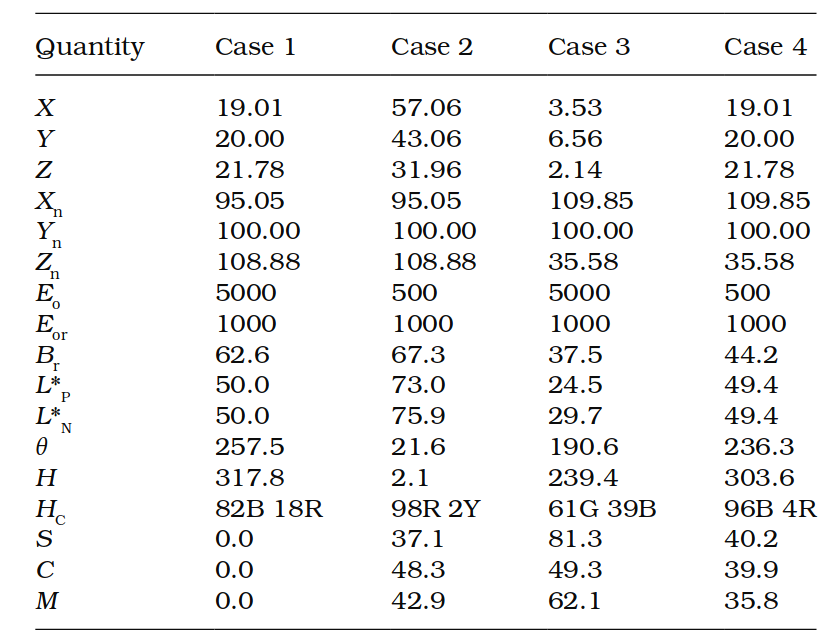

11. The Nayatani model
背景与重要性
在接下来的几章中，将详细介绍历史上和目前被广泛研究和使用的色貌模型。本章重点讲述由 Nayatani 及其团队开发的色貌模型，这个模型是早期基于色度学的重要模型之一。和 Hunt 模型（详见第12章）一样，Nayatani 模型是一种完整的色貌模型，能够在多种观察条件下，预测第4章中提到的各种颜色外观参数。
模型特点
-
全面预测能力
Nayatani 模型能完整地描述颜色的外观，包括我们平时感知到的颜色明亮程度、色彩鲜艳程度以及颜色的整体对比效果。这个模型的基础是色度学理论，同时结合了人类视觉系统如何适应不同环境的特点。 -
早期色貌研究的重要进展
相较于其他早期的模型，Nayatani 模型在处理复杂的视觉环境下表现优异，为后续的色貌模型研究奠定了基础。 -
与 Hunt 模型的对比
虽然两者都是完整的色貌模型，但 Nayatani 模型更强调“色彩适应”——也就是颜色如何随着光线和环境的变化而改变——在观察条件变化时尤其有效。
实际应用
- 工业领域：Nayatani 模型在纺织、涂料、印刷等行业中非常实用，帮助精确评估颜色在不同光照条件下的变化。
- 图像技术：在数码摄影和色彩管理中，该模型用于解决不同设备和环境下色彩一致性的问题，确保显示和打印的颜色更接近人眼看到的效果。
译者注：Nayatani 模型的重要性在于它结合了人眼视觉的生理特性和色度学的数学模型，填补了传统色度学在复杂实际场景中的不足。这使它成为早期色貌研究中不可忽视的一个里程碑。
11.1 目标与方法
Nayatani 色貌模型的起源与发展
Nayatani 色貌模型是他们在第9章提到的“色彩适应模型”的自然延伸（Nayatani et al., 1981），并结合了 Hunt 在1982年和1985年首次提出的色貌模型概念（Hunt, 1982, 1985）。这个模型最初在1986年和1987年的研究中被描述，并在1995年进行了修订和总结（Nayatani et al., 1995）。本章主要描述1995版的模型。
研究背景与模型适用范围
该模型的研发背景是“照明工程”领域，主要用于分析和优化光源的“显色性”（即光源呈现颜色的能力）。这种应用的需求与图像再现领域有很大不同，因此：
- 对于从事图像处理的人来说，Nayatani 模型可能并不完全适用；
- 同样地，针对图像应用开发的模型（例如 CIECAM02）可能无法满足照明工程的需求。
尽管如此，将模型应用于其设计之外的领域是非常有价值的探索——这可能带来两个结果： 1. 意外的适用性：如果模型表现良好，说明它的普适性很强； 2. 对比与改进：如果模型不适用，也能帮助我们了解不同应用场景的需求差异。
因此，尽管 Nayatani 模型并非专为图像应用设计，它仍然值得在需要色貌模型的场景中进行评估。
模型的特点与适用范围
Nayatani 模型试图预测许多色貌现象，包括：
-
Stevens 效应：随着光照强度增加，感知的对比度也增加；
-
Hunt 效应：随着光照强度增加，颜色的鲜艳度也增加；
-
Helson–Judd 效应：颜色感知在不同背景下的变化。
模型主要用于预测“简单色块”在“中性灰色背景”上的颜色外观。它的设计特点是：
-
适合分析简单的视觉刺激，而非复杂图像或动态背景的变化；
-
输出值能够与主要的色貌属性（如明度、亮度、鲜艳度、色度和色相）相对应。
与其他模型的比较
Nayatani 模型的设计初衷是服务于“照明与光源显色”领域，这使得它在以下方面与 Hunt 模型、RLAB 模型及 CIECAM02 等专为图像应用设计的模型有所不同。这些“看似的限制”其实在照明应用中并不是问题，而是模型的优势。
11.2 输入数据
Nayatani 色貌模型需要一组关键参数作为输入，用于描述刺激物、背景和观察条件的光学与色度特性。具体包括以下内容：
- 背景亮度因子（\(Y_o\)）
表示中性灰背景的亮度因子，以百分比表示。其值必须不小于 18%（即 0.18）。
- 光源颜色（\(x_o, y_o\)）
使用 CIE 1931 标准色度学观察者的色品坐标定义光源的颜色。
- 测试刺激物
用色品坐标（\(x, y\)）和亮度因子（\(Y\)）表示。
- 绝对亮度（\(E_o\)）
定义测试颜色和适应场的绝对亮度，单位为勒克斯（lux）。
- 归一化照度（\(E_{or}\)）
以勒克斯为单位，通常范围在 1000 至 3000 lux。
- 噪声参数（\(n\)）
用于非线性色彩适应模型，通常取值为 1。
初步计算
模型在进行核心计算前，需要完成以下几项初步计算：
适应亮度（\(L_o\)）和归一化亮度（\(L_{or}\)）
背景为朗伯扩散体（Lambertian diffuser）时，适应亮度与归一化亮度的计算公式如下（单位为cd/m²）：
从 CIE 三刺激值到锥体响应的转换
模型通过色品坐标计算适应场的中间值，用于表征锥体响应：
11.3 适应模型
与所有色貌模型一样，Nayatani 色貌模型的第一阶段是进行色彩适应（Chromatic Adaptation）的转换。该适应模型是第9章所述非线性色彩适应模型的精炼版本（CIE 1994；Nayatani et al., 1981）。在模型的构建过程中，色彩适应模型被嵌入到其他公式中。为便于理解，本节将遵循 Nayatani et al. (1995) 的处理方式，并在适当的公式中指出相关的色彩适应特性。
适应场的锥体响应计算
适应场的锥体响应需要基于绝对亮度水平计算。这一计算依赖于之前的色品转换公式（公式 11.3 至 11.5）、光照水平 \( E_o \) 和适应背景的亮度因子 \( Y_o \)。计算公式如下：
非线性色彩适应的指数计算
基于适应场的锥体响应（公式 11.6），分别计算短波长（B）、中波长（G）和长波长（R）锥体的指数值。公式如下：
基于归一化亮度的附加指数计算
归一化亮度的附加指数使用与中波长和长波长锥体相同的形式，公式如下：
测试刺激物的锥体响应计算
测试刺激物的锥体响应通过传统的线性转换计算：
缩放系数计算
最后，计算两组缩放系数 \( e(R) \) 和 \( e(G) \)，公式如下：
上述计算提供了在色貌模型中实现非线性色彩适应模型所需的所有中间数据。这些数据将在后续公式中被逐步使用，以完整预测颜色的外观特性。
11.4 对立色维度
在 Nayatani 色貌模型中，锥体响应被直接转换为表示经典视觉响应的对立色维度：一个无色通道和两个色彩通道。这些公式同时包含了非线性色彩适应模型的元素。
无色响应计算
无色响应 \( Q \) 的计算公式如下：
公式解析：
-
无色响应是长波锥体响应 \( R \) 和中波锥体响应 \( G \) 的加权总和，权重为 \( \frac{2}{3} \) 和 \( \frac{1}{3} \)，对应人眼视网膜中两种锥体的相对分布比例。
-
噪声项 \( n \) 通常取值为 1.0。
-
每个锥体响应先经过 von Kries 型变换归一化（以适应背景的锥体响应为基准）。
-
对归一化结果取对数，模拟人类视觉系统中已知的非线性压缩。
-
\( e(R) \) 和 \( e(G) \) 是前面计算的缩放系数，\( \beta \) 是色彩适应的指数调整因子。
-
额外的常数 \( 41.69 \) 用于缩放，完成公式计算。
色彩通道计算
红-绿通道响应 \( t \) 和黄-蓝通道响应 \( p \) 的计算公式如下：
公式解析：
-
红-绿通道 \( t \)
计算中结合了三种锥体响应： a. \( R_o - G_o \) 的加权差值表示红绿对立； b. 短波锥体 \( B_o \) 的响应对长波（红）部分有轻微影响，用于解释光谱紫的感知和独特黄的预测。 -
黄-蓝通道 \( p \)
a. 通过 \( R_o + G_o \) 的加权和产生黄色响应； b. 减去 \( B_o \) 的响应生成对立的蓝色。 -
这些公式使用了 Hunt 模型中提出的加权因子，分别反映了视网膜锥体的分布特点。
色相角计算
色相角 \( \theta \) 的计算公式如下：
公式解析：
-
色相角是从 \( t \) 轴（红-绿）开始的正角度，范围为 0° 至 360°。
-
这种定义方式与 CIELAB 色空间一致（CIE 1986）。
-
色相角 \( \theta \) 被用于进一步计算其他色貌属性，例如饱和度和鲜艳度中的色相依赖调整因子。
通过这些计算，模型得出了视觉系统的无色和色彩对立响应，用于后续的明度、亮度、饱和度、鲜艳度和色相等属性的预测。
11.5 明亮度
测试样品的明亮度 \( Br \) 的计算公式如下：
公式解析
-
\( Q \) 是无色响应，定义于公式 11.14，并在此基础上结合了适应指数 \( \beta_R \)、\( \beta_G \) 和 \( \beta_L \)，用来引入绝对亮度对明亮度的影响。与“明度”不同，明亮度更强调整体亮度水平。
-
系数 \( 50 \) 是一个用于调整整体明亮度的常数。
理想白的明亮度计算
为了计算样品相对于理想白的明亮度，需要先计算理想白的明亮度 \( Br_w \)，公式如下：
公式解析
-
理想白的计算是基于公式 11.14，对完美反射体（即 \( Y = 100\% \)）进行计算得到的。
-
在计算中，\( R_o \)、\( G_o \) 和 \( \beta \) 的值根据理想白的条件进行替换，确保明亮度的预测准确。
-
公式中的 \( \xi \) 和 \( \eta \) 是色品坐标变换值，与先前定义一致。
通过这些公式，模型能够同时计算测试样品的明亮度 \( Br \) 和理想白的明亮度 \( Br_w \)。这些计算结果为进一步分析样品的颜色外观提供了基础。
11.6 明度
无色明度 \( L_P^* \)
测试样品的无色明度 \( L_P^* \) 可直接通过无色响应 \( Q \) 计算，公式如下：
公式解析：
- \( Q \) 是无色响应，其值可以为正或负。
- 中性灰的 \( Q = 0 \) 对应明度 \( L_P^* = 50 \)。
- 明度的范围被限定为 0（黑）到 100（白）。
归一化无色明度 \( L_N^* \)
归一化无色明度 \( L_N^* \) 根据 CIE 的定义计算，定义为样品亮度相对于理想白亮度的百分比。公式如下：
公式解析：
- \( B_r \)：测试样品的亮度。
- \( B_{rw} \)：理想白的亮度。
两种明度量的区别
- \( L_P^* \) 和 \( L_N^* \) 在大多数情况下差异很小，可以忽略不计。
- 两种明度量均不包括 Helmholtz-Kohlrausch 效应，因此不能很好地描述有色物体的感知明度。
关于 Helmholtz-Kohlrausch 效应
- Helmholtz-Kohlrausch 效应：色相和饱和度对感知明度和亮度的影响。
- 需要额外的模型来考虑该效应，特别是在比较不同色相或色度的刺激物时。
通过上述公式，Nayatani 色貌模型可以描述样品的无色明度，但在处理色彩感知复杂性的情况下，需要额外扩展模型以包括更多影响因素。
11.7 色相
色相角计算
色相角 \( \theta \) 的计算方法已在公式 11.17 中给出，其计算方式与 CIELAB 色空间一致：
公式解析：
- \( \theta \) 表示色相角，范围为 0° 至 360°，从红-绿通道 \( t \) 轴正方向开始测量。
- 色相角为基础量，用于后续描述更详细的色相相关属性。
色相四分位计算
色相四分位 \( H \) 是一个 400 等分的色相标度，在此标度上，独特色（unique hues）的值定义为：
- 红（red）：0
- 黄（yellow）：100
- 绿（green）：200
- 蓝（blue）：300
色相四分位通过线性插值得到，使用测试样品的色相角 \( \theta \) 和独特色的预定义角度：
- 红：20.14°
- 黄：90.00°
- 绿：164.25°
- 蓝：231.00°
色相组成计算
色相组成 \( HC \) 描述了测试颜色在感知上由两种独特色组成的比例。例如，橙色可能被描述为 \( 50Y + 50R \)，表示色相在独特红和独特黄之间均匀分布。
计算过程如下：
- 使用线性插值，将色相四分位转换为两个独特色的百分比分量。
- 独特色的比例由测试色落在相邻独特色之间的位置决定。
示例：
- 假设一个颜色刺激的色相角 \( \theta = 43.19^\circ \)：
- 其色相四分位 \( H = 32.98 \)（通过线性插值计算）。
- 其色相组成 \( HC = 33Y + 67R \)，表示色相在独特红和独特黄之间，接近独特红。
通过上述计算，模型能够提供从基础色相角到色相四分位和色相组成的全面描述，从而更直观地表达颜色的感知特性。
11.8 饱和度
在 Nayatani 色貌模型中，饱和度是最直接的色彩属性，它是计算鲜艳度和色度的基础。饱和度包括两个分量：红-绿分量 \( S_{RG} \) 和黄-蓝分量 \( S_{YB} \)。
红-绿分量 \( S_{RG} \) 和黄-蓝分量 \( S_{YB} \)
红-绿分量和黄-蓝分量的计算公式如下：
公式解析：
- \( t \) 和 \( p \)：分别表示红-绿通道和黄-蓝通道的响应。
- \( E_s(\theta) \)：色相角 \( \theta \) 的色强度函数（后续通过公式 11.24 计算）。
- \( \beta_L \)：与亮度相关的指数调整因子，用于预测 Hunt 效应。
- \( 488.93 \)：用于调整比例的缩放因子。
色强度函数 \( E_s(\theta) \)
色强度函数 \( E_s(\theta) \) 是一个经验公式，用于调整饱和度随色相角的变化，公式如下：
公式解析：
- \( E_s(\theta) \) 由多个正弦和余弦项组成，通过拟合实验数据得出，用于修正不同色相角的饱和度感知。
总饱和度 \( S \)
最终的总饱和度 \( S \) 是通过红-绿分量和黄-蓝分量的欧几里得距离计算得出：
通过以上公式，模型能够计算饱和度的两个主要分量以及整体饱和度，为色貌的其他属性（例如鲜艳度和色度）的计算提供了基础。
11.9 彩度
彩度的计算基于饱和度的定义关系。正如第4章所述，饱和度可以表示为彩度除以明度。因此，彩度可以通过饱和度乘以明度得到。
在 Nayatani 色貌模型中，彩度的计算形式与此定义基本一致。测试样品的红-绿彩度、黄-蓝彩度以及整体彩度的计算公式分别如下：
红-绿彩度 \( C_{RG} \)
黄-蓝彩度 \( C_{YB} \)
总彩度 \( C \)
公式解析
- \( S_{RG} \)、\( S_{YB} \)、\( S \)：分别为红-绿饱和度、黄-蓝饱和度以及总饱和度（见公式 11.22 至 11.25）。
- \( P_L^* \)：测试样品的明度（公式 11.20）。
- 常数 50 用于缩放明度的范围。
- 指数 0.7 引入了一定的非线性，用于更好地拟合孟塞尔色卡（Munsell Book of Color）的恒定彩度曲线（Nayatani et al. 1995）。
特性说明
与传统定义的彩度相比，这些公式通过引入非线性项（指数 0.7），更精确地描述了真实观察条件下彩度的感知变化，同时考虑了明度和饱和度的非线性关系。
通过上述公式，模型能够提供更加细致的彩度预测，并支持进一步的色貌属性计算。
11.10 色彩鲜艳度
在 Nayatani 色貌模型中，色彩鲜艳度的计算基于 CIE 对色貌属性的定义。彩度被定义为样品的色彩鲜艳度相对于理想白亮度的比值。因此，色彩鲜艳度可以通过样品的彩度乘以理想白的亮度来计算。
测试样品的红-绿色彩鲜艳度、黄-蓝色彩鲜艳度以及总体色彩鲜艳度的计算公式分别如下：
红-绿色彩鲜艳度 \( M_{RG} \)
黄-蓝色彩鲜艳度 \( M_{YB} \)
总色彩鲜艳度 \( M \)
公式解析
- \( C_{RG} \)、\( C_{YB} \)、\( C \)：分别为红-绿彩度、黄-蓝彩度和整体彩度（公式 11.26 至 11.28）。
- \( B_{rw} \)：理想白的亮度（由公式 11.19 计算）。
- 常数 100 是归一化值，源于在标准 D65 光源和归一化照度条件下，理想白亮度的定义。
特性说明
色彩鲜艳度通过结合彩度和理想白亮度，能够更准确地描述在给定光源和背景条件下，颜色的整体感知强度。此归一化设计确保了不同测试条件下的计算结果具有一致性和可比性。
通过以上公式，Nayatani 色貌模型可以有效预测颜色的色彩鲜艳度，为进一步的颜色外观分析提供了基础。
11.11 逆模型
在许多应用中，特别是图像再现中，色貌模型需要能够双向使用，即同时支持正向（从物理数据到感知属性）和反向（从感知属性到物理数据）的计算。因此，公式能够解析地反转是非常重要或至少非常方便的。
幸运的是，Nayatani 色貌模型可以解析地进行逆运算。Nayatani 等人在 1990 年的一篇论文中介绍了如何反转模型以匹配亮度–色彩鲜艳度或明度–彩度。这些方法虽然基于略早的模型版本，但基本过程仍适用。
模型的实施与逆转步骤
模型的应用和逆转可以视为一个简单的逐步过程。以下是正向和逆向计算的关键步骤：
-
获取物理数据
从测试样品和观察条件中获取必要的物理参数，例如亮度、色品坐标、背景光照等。 -
计算 \( Q \)、\( t \) 和 \( p \)
使用相关公式（如公式 11.14 和公式 11.15–11.16），计算无色响应 \( Q \) 以及红-绿和黄-蓝通道的响应 \( t \) 和 \( p \)。 -
计算色相相关量
包括： - 色相角 \( q \)（公式 11.17）；
- 色强度函数 \( E_s(q) \)（公式 11.24）；
-
色相四分位 \( H \) 和色相组成 \( HC \)。
-
计算亮度、明度和饱和度
包括： - 亮度 \( Br \) 和理想白的亮度 \( Br_w \)（公式 11.18–11.19）；
- 明度 \( P_L^* \) 和归一化明度 \( N_L^* \)（公式 11.20–11.21）；
-
饱和度 \( S \)（公式 11.25）。
-
计算彩度 \( C \)
根据公式 11.26–11.28，从饱和度和明度推导彩度。 -
计算色彩鲜艳度 \( M \)
根据公式 11.29–11.31，从彩度和理想白亮度推导色彩鲜艳度。
正向与逆向关系
在逆模型中，以上步骤可以按照相反的顺序逐步求解。例如，从感知属性（如色彩鲜艳度 \( M \)、彩度 \( C \)、明度 \( P_L^* \)）开始，通过逆向推导，逐步计算出物理数据（如锥体响应、亮度等）。
实际应用中的优势
-
解析反转的便捷性：
由于 Nayatani 模型的公式多为解析形式，能够直接计算，无需迭代算法，这在图像处理和色彩再现中尤为实用。 -
灵活性：
逆模型可以在不同条件下高效匹配感知结果与物理参数，为设计和优化复杂色彩系统提供支持。
通过这些步骤，Nayatani 模型实现了色貌属性与物理数据之间的双向转换，极大提高了其实用性。
11.12 预测现象
Nayatani 色貌模型能够预测因色彩适应和亮度水平变化而引起的颜色外观变化，主要包括以下现象：
1. 预测的色貌现象
-
Stevens 效应：
随着亮度增加，感知对比度增强的现象。 -
Hunt 效应：
随着亮度增加，颜色鲜艳度和饱和度增强的现象。 -
Helson–Judd 效应：
在不同背景亮度条件下颜色感知的变化。
2. 模型的适用范围
- 支持的条件：
- 模型适用于背景亮度因子大于 18% 的情况。
-
模型在处理色彩适应和亮度变化时具有较高的准确性。
-
限制：
- 模型不适用于背景颜色变化（同时对比效应）或环境相对亮度变化（如 Bartleson–Breneman 方程）的预测。
- 模型不包含对不完全色彩适应或认知光源补偿（discounting-the-illuminant）机制的预测能力。
3. 不完全色彩适应的处理
- Nayatani（1997）提出了一种基于实验数据的方法，用于估计不完全色彩适应的水平。
- 虽然此方法在视觉实验的结果预测中有用，但在实际应用中价值有限，尤其是在缺乏相关视觉实验数据的情况下。
表格 11.1 示例计算
表 11.1：Nayatani色貌模型计算示例

解释说明
- 表格中展示的 \( S \)、\( C \)、\( M \) 分别对应饱和度、彩度和色彩鲜艳度的计算结果。
- 色相角 \( \theta \) 和色相四分位 \( H \) 描述了颜色的感知色相。
- 无色明度 \( P_L^* \) 和归一化明度 \( L_N^* \) 提供了对样品亮度的不同描述。
通过表格中的结果可以看出，模型在处理不同输入条件下的色貌属性变化时具有良好的适应性和一致性。
1.13 为什么不要只使用 Nayatani 模型？
模型的优势
Nayatani 色貌模型是一种完整的模型，能够预测所有重要的色貌属性。这些优点包括：
- 全面性：模型涵盖了色彩鲜艳度、彩度、明度、饱和度和色相等所有主要色貌属性。
- 解析可逆性：模型可以解析地反转，便于在需要正向和反向预测的应用中使用。
- 计算相对简单：尽管公式稍显复杂，但其整体逻辑较为直接。
模型的不足
尽管 Nayatani 模型具有上述优点，但仍有以下不足，限制了其作为通用标准模型的可能性：
- 无法处理背景和环境因素：
- 模型无法预测背景颜色的变化（例如同时对比效应）。
-
模型不支持环境相对亮度变化的预测，而这些因素在图像再现中尤为关键。
-
缺乏适应水平的预测：
-
模型不能预测不同光源或介质之间的适应水平，而这一点对跨媒体色彩再现至关重要。
-
局限于简单视场：
-
模型主要基于简单色块开发和测试，无法准确适用于更复杂的观察场景。
-
Helson–Judd 效应的过预测：
-
模型在色彩不强的光源（例如光源 A）下对 Helson–Judd 效应的预测过强，而实际上这种效应在此条件下并不存在。
-
精度不足：
-
在后续章节中描述的各种色貌模型测试中，Nayatani 模型的预测精度通常不够高。
-
未包含视觉杆细胞的贡献：
- 视觉杆细胞的影响（如 Hunt 模型中包含的）未被纳入，而这是颜色感知的重要部分。
未来的贡献与发展
尽管 Nayatani 模型存在上述局限，但它在色貌模型的发展中具有重要意义。以下是其可能的贡献方向：
-
对未来模型的影响：
Nayatani 模型的一些核心思想已经被纳入后续模型中，如 CIECAM97s 和 CIECAM02，这些模型在一定程度上继承了其结构和公式。 -
理论空间的拓展：
Nayatani 本人开发了 "Nayatani Theoretical" 色彩空间（2004），这一空间引入了一些非常有趣的概念，包括： - Evans 的 "辉光"（brilliance），也称为荧光；
- NCS 色彩系统中的白度-黑度与色度（chromaticness）概念；
-
Helmholtz-Kohlrausch 效应。
-
实际应用：
Nayatani 的理论被应用于扩展色域显示的色彩增强（Heckaman 和 Fairchild, 2008, 2009, 2011），用于优化图像显示和提升视觉效果。
总结
尽管 Nayatani 模型未能成为通用色貌模型的最终选择，其对色貌模型的发展作出了重要贡献。它的核心思想和公式形式可能会继续影响未来色貌模型的设计与应用。